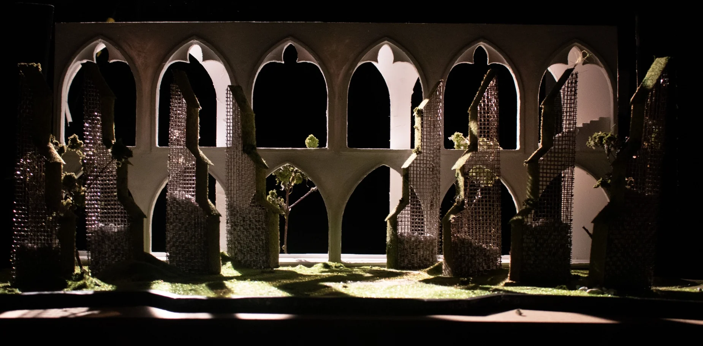
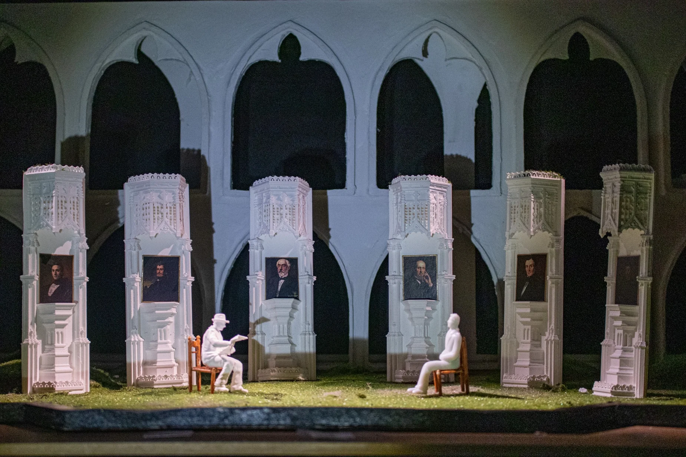
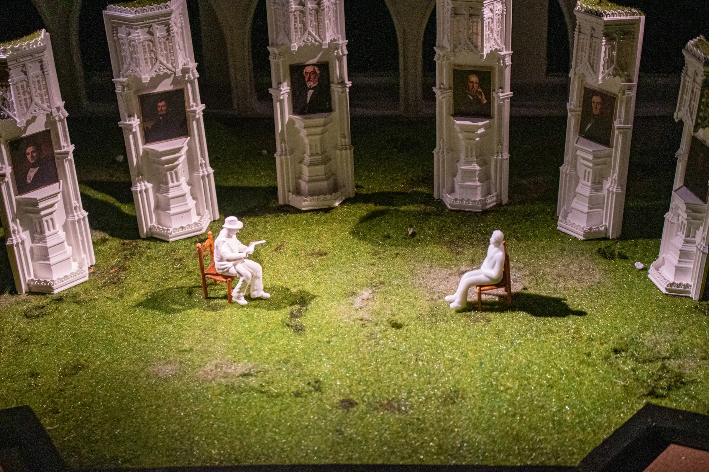
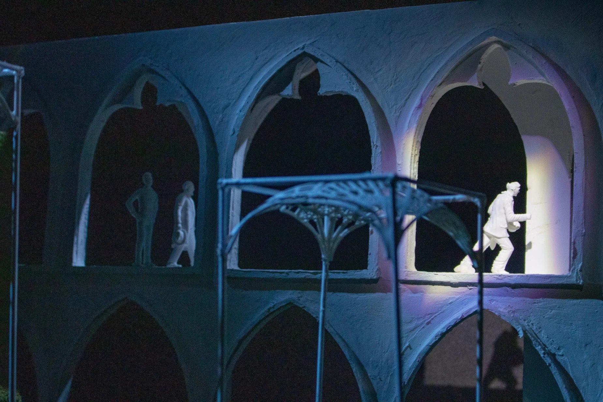
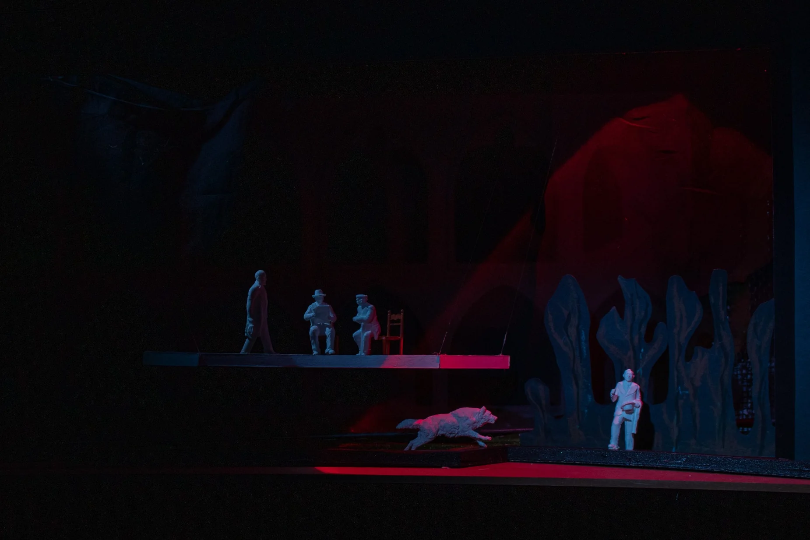
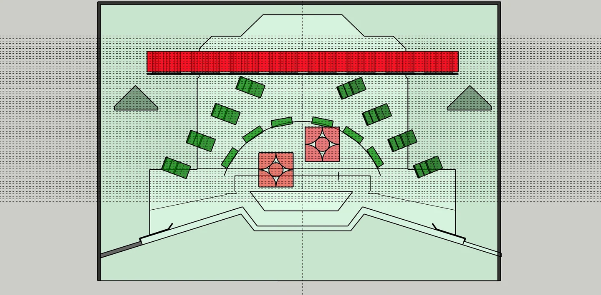

The Hound of the Baskervilles
Scenography Proposal

This stage proposal for The Hound of the Baskervilles follows the story through Dr Watson’s recollections. Information arrives in fragments as Watson pieces together what happened. I wanted the set to reveal the world in the same way, letting familiar structures take on new meanings as more of the space came into view.
I looked at dream imagery and liminal spaces for ways to make a recognisable form feel out of place. The towers suggest Gothic architecture, then take on the outlines of a landscape as their arrangement and shadows change. I used the model to test when those same forms begin to read as another place.
- Role
- Scenography, Scale Modelling & Lighting Studies
- Medium
- Scale Model, Stage Plans, Lighting Storyboard
- Design Venue
- Barbican Theatre
One set, changing places
I took the shape of the towers from the supporting walls of Gothic cathedrals. By raising or lowering parts of the set, I could rearrange the stage without large movements from side to side.
I used the scale model and a lighting storyboard to test how the same structures could read as an interior in one scene and an unfamiliar landscape in the next.








How the set moves
The proposal uses fly bars and floor lifts to change the arrangement of the set between scenes.
Ground plan


Red marks the elements hung on fly bars. Green marks the floor and lift system.